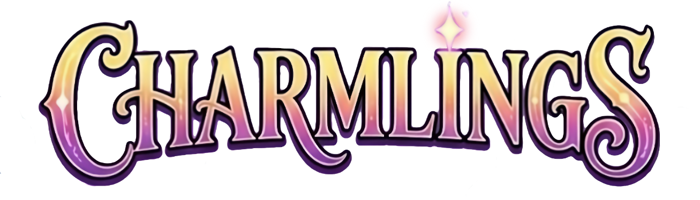
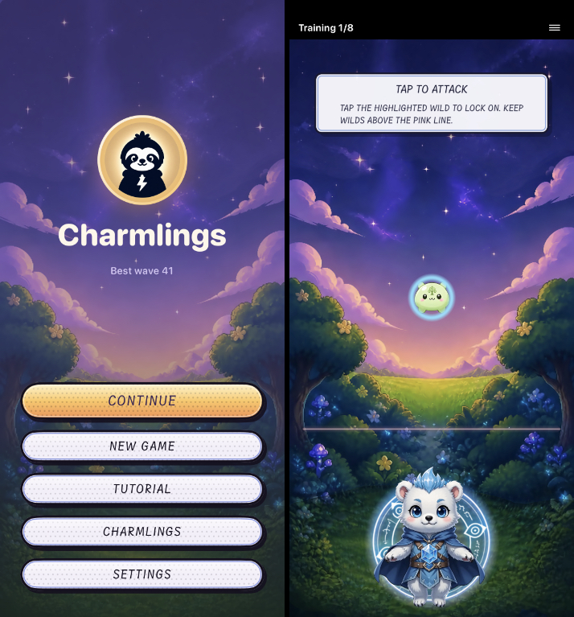
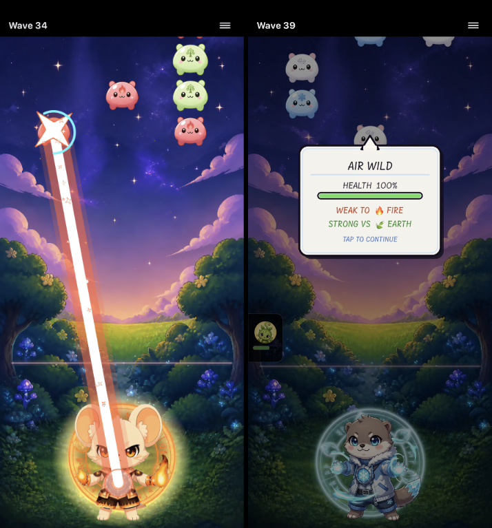
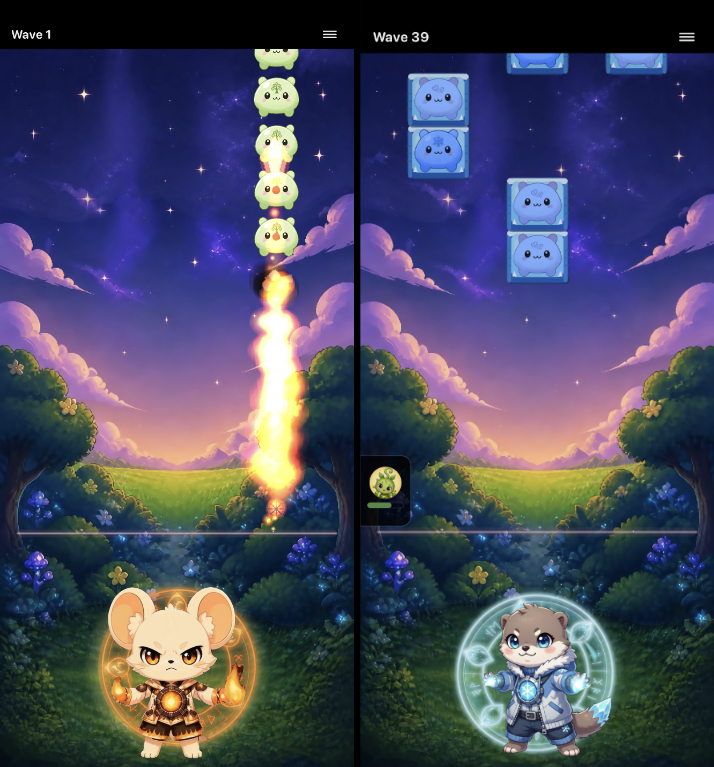
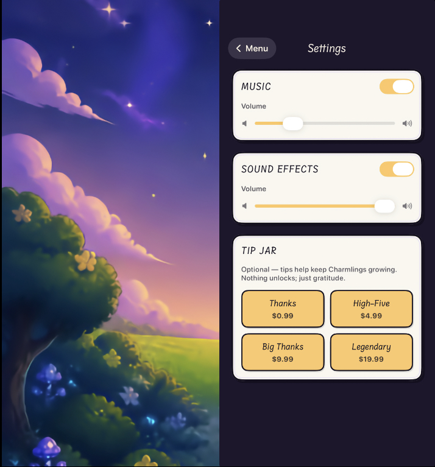

Story
The Hunger of the Wilds
Chapter 1
Who created the Wilds, and what do they want? Read the legend of the Charmlings to uncover the story of their rise as protectors against the forces threatening the Cosmos.

An iOS strategy RPG
The Wilds have been unleashed upon the Cosmos like a plague, driven by an insatiable hunger for power. Rally your Charmlings to defend your home against waves of attackers. Channel your Charmlings’ elemental abilities to disperse the Wilds before their appetite unravels the very balance of the Cosmos.
Gameplay
Charmlings is a real-time lane-defense game. Wilds march down the lanes toward you—tap an enemy to lock on, and your Charmling’s beam will fire automatically. You begin with four Charmlings, each possessing unique elemental powers. You’ll need quick thinking to choose the Charmlings best suited to counter your enemies and determine how best to use their powerful battlefield effects.

Changing targets is as easy as tapping another enemy.
The game also doesn’t punish you for being curious. Long-pressing an enemy to learn more about its strengths and weaknesses pauses gameplay, so you can take a breather when you need it.
Overrun by Wilds during a wave? No problem. You can restart the wave without penalty, with any unconscious Charmlings restored to full health. That means you can freely experiment with different strategies.



Story
Chapter 1
Who created the Wilds, and what do they want? Read the legend of the Charmlings to uncover the story of their rise as protectors against the forces threatening the Cosmos.